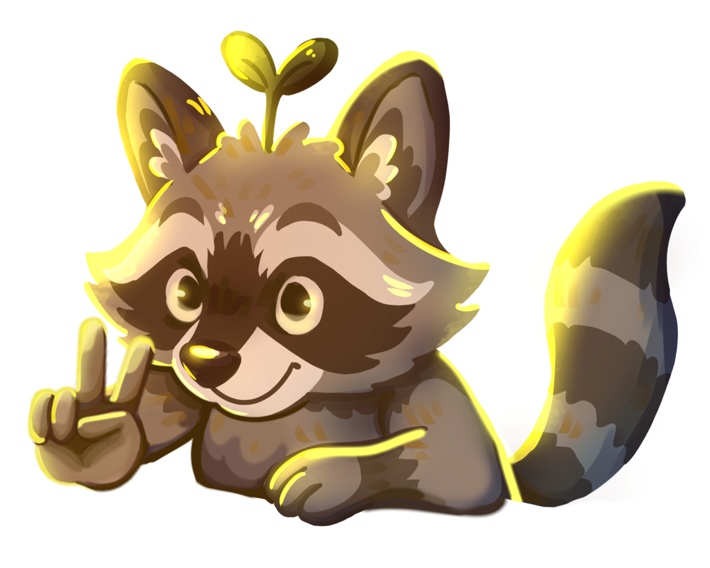

Nuestro Equipo
Conoce a lxs estudiantes que hicieron posible esta muestra.

Pedro, nuestra mascota
Pedro es un mapache curioso y creativo. Representa el espíritu colectivo y resiliente de esta muestra. Siempre anda explorando ideas y apoyando los proyectos.